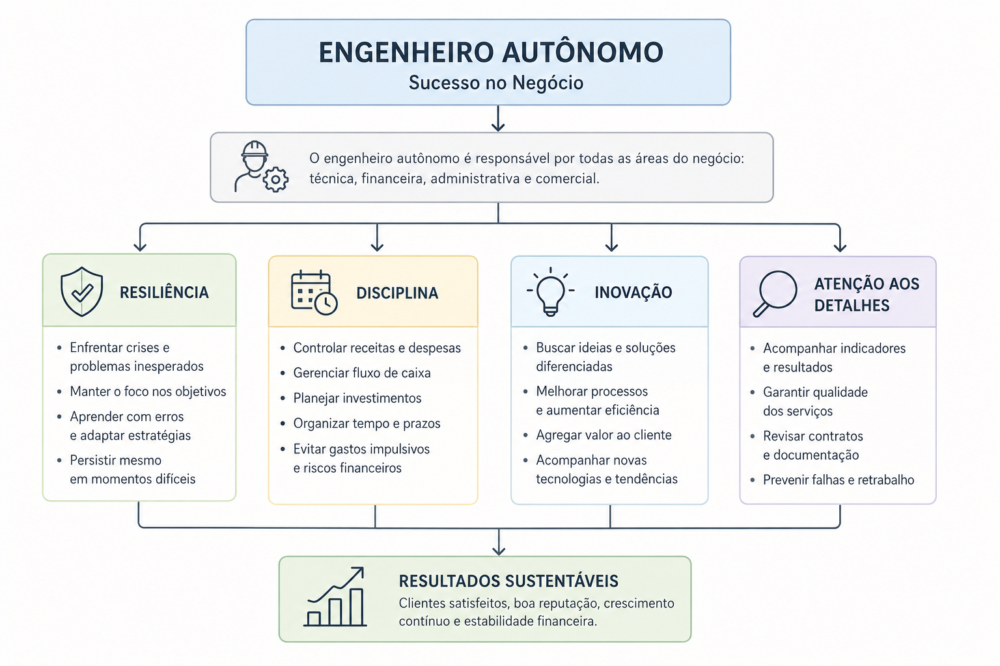

Introdução
No ambiente atual, dominar apenas conhecimentos técnicos já não é suficiente para garantir o sucesso profissional de um engenheiro. Cada vez mais profissionais da engenharia atuam como autônomos, consultores, prestadores de serviço ou pequenos empresários, sendo responsáveis não apenas pelas soluções técnicas, mas também pela administração completa do negócio.
Nesse contexto, surgem as habilidades empresariais: competências fundamentais para que o engenheiro consiga manter sua atividade financeiramente saudável, competitiva e sustentável ao longo do tempo. O engenheiro autônomo precisa tomar decisões estratégicas diariamente, lidar com clientes, administrar recursos financeiros, organizar processos e encontrar soluções para problemas inesperados.

Engenheiro autônomo e empresário individual
É importante compreender a diferença entre um trabalhador autônomo e um empresário individual. Embora os dois modelos possam parecer semelhantes, existe uma distinção relevante. O trabalhador autônomo geralmente presta serviços de forma independente, enquanto o empresário individual assume responsabilidade jurídica, operacional e financeira pelo negócio, incluindo dívidas, riscos e gestão administrativa.
Isso significa que o engenheiro empreendedor precisa desenvolver um conjunto amplo de competências além da engenharia propriamente dita. Entre as habilidades mais importantes para o sucesso de um engenheiro autônomo destacam-se resiliência, disciplina, inovação e atenção aos detalhes. Essas competências funcionam como pilares da atividade empresarial e influenciam diretamente a capacidade do profissional de enfrentar desafios, manter estabilidade financeira e crescer no mercado.
Resiliência
A resiliência é a capacidade de enfrentar dificuldades, adaptar-se a mudanças e continuar avançando mesmo diante de situações adversas. No contexto empresarial, crises e problemas são inevitáveis. Um engenheiro pode enfrentar perda de clientes, atrasos em pagamentos, falhas em projetos, mudanças econômicas ou aumento da concorrência. Nessas situações, a resiliência torna-se essencial.
Um profissional resiliente não abandona seus objetivos diante das primeiras dificuldades. Em vez disso, analisa os problemas de forma racional, busca soluções e ajusta estratégias quando necessário. Na engenharia, essa habilidade é particularmente importante porque muitos projetos envolvem riscos técnicos, financeiros e operacionais.
A resiliência também está diretamente ligada à capacidade de aprendizado contínuo. Muitas vezes, erros e fracassos se tornam fontes importantes de experiência profissional. Empresas sólidas normalmente são construídas por profissionais capazes de persistir durante períodos difíceis.
Disciplina
A disciplina é uma das competências mais importantes para a gestão de um negócio sustentável. Ela está diretamente relacionada ao controle financeiro, à organização das atividades e à administração eficiente dos recursos da empresa. Muitos profissionais cometem o erro de aumentar excessivamente os gastos quando o negócio começa a gerar bons resultados financeiros, comprando equipamentos desnecessários, fazendo investimentos impulsivos ou elevando os custos operacionais sem planejamento.
Na prática, um engenheiro autônomo precisa manter controle rigoroso sobre:
- receitas e despesas;
- investimentos e fluxo de caixa;
- estoque, ferramentas e ativos;
- custos operacionais;
- tempo, prazos e documentação.
A falta de disciplina financeira é uma das principais causas de falência de pequenos negócios. Um engenheiro que recebe vários contratos em curto período e compra equipamentos caros sem planejamento pode comprometer sua saúde financeira caso o volume de trabalho diminua posteriormente. A disciplina também envolve gestão do tempo, cumprimento de prazos, documentação atualizada e acompanhamento sistemático de projetos.
Inovação
A inovação é um dos principais combustíveis para o crescimento empresarial. Em mercados competitivos, muitas pessoas oferecem serviços semelhantes. O diferencial geralmente está na capacidade de criar soluções novas, melhorar processos ou apresentar ideias mais eficientes.
Um engenheiro inovador busca constantemente maneiras de:
- aumentar eficiência;
- reduzir custos;
- melhorar desempenho;
- automatizar processos;
- otimizar recursos;
- entregar mais valor ao cliente.
Inovação não significa necessariamente criar tecnologias revolucionárias. Muitas vezes, pequenas melhorias em processos já representam grande vantagem competitiva. Um engenheiro de automação, por exemplo, pode desenvolver um sistema de monitoramento remoto mais simples e acessível que os concorrentes. Mesmo sendo uma melhoria incremental, essa solução pode atrair novos clientes e fortalecer a reputação profissional.
A inovação também ajuda na fidelização de clientes. Quando um cliente percebe que o profissional entrega soluções modernas e eficientes, aumenta a confiança na capacidade técnica do engenheiro. Além disso, profissionais inovadores tendem a se adaptar melhor às mudanças tecnológicas do mercado, especialmente em áreas como automação industrial, análise de dados, inteligência artificial, IoT e manutenção preditiva.
Atenção aos detalhes
A atenção aos detalhes é uma habilidade crítica tanto na engenharia quanto na gestão empresarial. Pequenos erros podem gerar grandes prejuízos financeiros, falhas operacionais ou perda de credibilidade. Um engenheiro empreendedor precisa acompanhar cuidadosamente contratos, indicadores financeiros, especificações técnicas, qualidade dos serviços, cronogramas, documentação, segurança operacional e relacionamento com clientes.
A análise detalhada das operações permite identificar padrões, corrigir falhas e melhorar continuamente os processos da empresa. Na área financeira, acompanhar receitas e despesas ajuda o profissional a entender quais serviços são mais lucrativos e quais atividades geram desperdícios. Na engenharia, a atenção aos detalhes também está relacionada à segurança e confiabilidade dos sistemas.
Um pequeno erro em um dimensionamento elétrico, em uma lógica de controle ou em uma especificação de instrumentação pode causar falhas graves em equipamentos industriais. Por isso, profissionais bem-sucedidos normalmente desenvolvem métodos padronizados de trabalho, utilizando checklists, procedimentos operacionais e sistemas de controle de qualidade.
A importância do conjunto de habilidades
Essas habilidades não atuam isoladamente. O verdadeiro diferencial está na combinação entre competência técnica e capacidade de gestão. Muitos engenheiros possuem excelente conhecimento técnico, mas enfrentam dificuldades porque não conseguem administrar corretamente o negócio. Da mesma forma, uma boa gestão sem competência técnica dificilmente sustenta um serviço de engenharia de qualidade.
O engenheiro moderno precisa desenvolver uma visão ampla, equilibrando:
- conhecimento técnico;
- organização financeira;
- capacidade de adaptação;
- inovação;
- relacionamento com clientes;
- planejamento estratégico.
Quanto mais desenvolvido for esse conjunto de competências, maiores serão as chances de crescimento profissional e estabilidade no mercado.
Exemplo prático: engenheiro de automação industrial autônomo
Imagine um engenheiro de automação que decide abrir uma pequena empresa para prestar serviços de manutenção e modernização de sistemas industriais offshore. No início, ele trabalha sozinho, realizando programação de CLPs, análise de falhas, integração de sistemas, manutenção em redes industriais e suporte remoto. Como muitos negócios em fase inicial, ele consegue poucos clientes e enfrenta dificuldades financeiras.
Após perder um contrato importante, o engenheiro decide não desistir. Ele analisa os erros ocorridos, melhora a apresentação comercial, investe em networking e amplia sua área de atuação. Com o tempo, consegue novos contratos. Essa é a aplicação prática da resiliência.
Quando começa a receber mais serviços, ele cria uma planilha de fluxo de caixa, controle de despesas, reserva financeira e cronograma de projetos. Em vez de gastar todo o lucro em equipamentos caros, investe apenas no necessário. Isso mantém o negócio financeiramente saudável e demonstra disciplina.
O engenheiro percebe que muitos clientes têm dificuldade em monitorar equipamentos remotamente. Então desenvolve dashboards de supervisão, relatórios automáticos e monitoramento remoto via rede industrial. Essa inovação diferencia seus serviços da concorrência. Para evitar erros, ele também cria checklists de comissionamento, padrões de documentação, procedimentos de backup e relatórios técnicos padronizados. Com isso, reduz falhas operacionais e aumenta a confiança dos clientes.
Após alguns anos, o número de clientes aumenta, a reputação profissional melhora, o faturamento cresce e o negócio se torna sustentável. Esse exemplo mostra que o sucesso do engenheiro empreendedor depende tanto das habilidades técnicas quanto das competências empresariais.
Conclusão
O engenheiro autônomo atua em um ambiente onde técnica e gestão caminham juntas. Resiliência, disciplina, inovação e atenção aos detalhes formam uma base sólida para enfrentar desafios, preservar a saúde financeira, entregar valor ao cliente e construir reputação. Em um mercado cada vez mais competitivo, essas habilidades podem ser tão importantes quanto o conhecimento técnico que sustenta o serviço de engenharia.